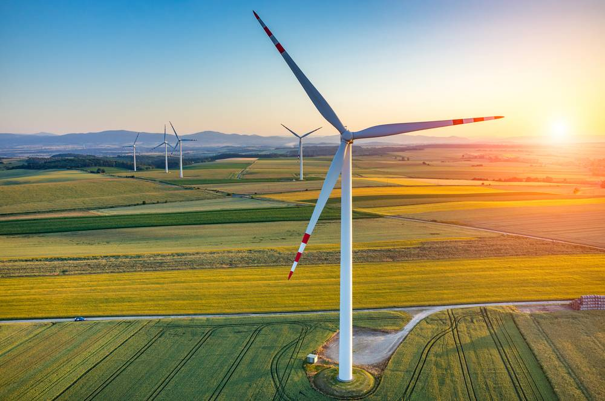

1.Transition to Renewable Energy
Shift from fossil fuels to renewable energy sources like solar, wind, and hydroelectric power.
and their Impact on Climate Change.
Climate change is one of the most pressing global challenges of our time. The primary driver behind this phenomenon is the increase in greenhouse gasses (GHGs) in the atmosphere, which trap heat from the Sun and contribute to the Earth's rising temperatures. Greenhouse gasses such as carbon dioxide (CO₂) and methane (CH₄) play a critical role in climate change by enhancing the atmosphere's ability to trap heat, leading to a cascade of environmental impacts.
Our project focuses on visualizing these complex relationships by providing an accessible platform where users can explore year-on-year greenhouse gas emissions by country and by industry. This interactive map allows anyone—from policymakers to the general public—to better understand the trends in emissions and their impact on climate change. By offering a detailed analysis of emissions data, we hope to contribute to the global effort to combat climate change through informed decision-making and public awareness.
Over the past decade, we have witnessed unprecedented changes in our climate, including rising temperatures, extreme weather events, and disruptions to natural ecosystems. As GHG emissions continue to rise, so do the associated risks—ranging from rising sea levels to food insecurity and the displacement of vulnerable populations. The ability to track and analyze emissions at both the country and industry levels is critical to understanding how these emissions contribute to climate change.
The analysis of GHG emissions reveals key trends that help us understand the sources and drivers of climate change. Here are some of the findings we highlight in our project:
1. Country-Level Emissions: Our color gradient map shows a stark contrast between emission levels in developed and developing nations. The data highlights that the largest emitters, such as the U.S., China, and India, contribute significantly to global emissions due to industrial activity, energy consumption, and transportation.
2. Industry-Specific Emissions: Upon clicking on a specific country, our platform reveals the breakdown of emissions by industry. This includes data on sectors such as energy, transportation, agriculture, and manufacturing, which are the major contributors to GHG emissions.
3. Year-on-Year Trends: By analyzing year-on-year changes in emissions, we can identify patterns of increase or decrease in specific regions and industries. This analysis is crucial for evaluating the effectiveness of climate policies, monitoring progress toward emission reduction targets, and identifying areas that require urgent attention.
Country-wise Yearly GHG Emissions
The data and analysis presented on our website highlight the urgent need for action against climate change. By understanding the sources and consequences of greenhouse gas emissions, we can develop effective strategies to reduce our carbon footprint and mitigate the impacts of climate change. Our solution also addresses the global need for transparent, actionable climate data that can inform and drive meaningful change. We offer a three-pronged approach:
1.Data Transparency and Accessibility: Our interactive platform makes GHG data easy to understand and navigate. Users can explore country-specific and industry-specific emissions data in real time, empowering them to make data-driven decisions. By presenting data in an intuitive format, we ensure that both experts and non-experts can engage with the information. 2.Visualizing Emissions: Our dual-map approach provides users with a clear understanding of how emissions are distributed geographically and across industries. The first map presents a global view, showcasing the year-on-year rise in emissions for each country. The second map dives deeper into the emissions breakdown by industry, enabling users to explore the root causes of a country's emissions and assess the role that different sectors play in contributing to climate change. 3.Actionable Insights and Recommendations: Beyond data visualization, our project offers practical steps that can be taken at both the national and industry levels for reducing emissions
Shift from fossil fuels to renewable energy sources like solar, wind, and hydroelectric power.

Improve energy efficiency in buildings, transportation, and industry to reduce energy consumption.
Promote the adoption of electric vehicles and public transportation to reduce emissions from transportation.
Implement carbon capture and storage technologies to reduce emissions from industrial sources.

Implement sustainable land use practices like reforestation, afforestation, and permaculture to sequester carbon dioxide.
1. Reduce Energy Consumption: Turn off lights, electronics, and appliances when not in use to reduce energy consumption.
2. Use Public Transportation: Use public transportation, walk, or bike whenever possible to reduce emissions from transportation.
3. Eat a Plant-Based Diet: Choose a plant-based diet to reduce greenhouse gas emissions from agriculture.
4. Conserve Water: Conserve water to reduce energy consumption and greenhouse gas emissions from water treatment.
5. Support Renewable Energy: Invest in renewable energy sources like solar panels or renewable energy credits to support clean energy production.
Join us in the fight against climate change by taking action today. Share our website with your friends and family to raise awareness about the importance of reducing greenhouse gas emissions. Together, we can make a difference and create a more sustainable future for all.
1. Our World in Data - Greenhouse Gas Emissions: A comprehensive overview of global GHG emissions by sector, country, and gas type with interactive charts.
2. NASA Space Apps Challenge 2024 - Climate Storytelling: Resources for using data to tell impactful climate stories through NASA's initiative.
3. EDGAR Report 2024: Detailed data on global GHG emissions by country and sector, with a focus on climate trends.
4. Artés, T. et al. (2019), A global wildfire dataset for fire regimes analysis. Scientific Data, 6(1), 1-11. doi:10.1038/s41597-019-0312-2.
5. EI (2024), Statistical Review of World Energy. Energy Institute, Last access: July 2024.
6. FAOSTAT (2024), UN Food and Agricultural Organisation Statistics. FAO, Last access: May 2024.
7. GFMR (2024), Global flaring data for gas consumption. World Bank, Last access: June 2024.
8. IATA (2024), Air Transport Statistics. IATA, 2024.
9. IEA (2023a), World Energy Balances - 2023 Edition. IEA.
10. IEA (2023b), Greenhouse Gas Emissions from Energy - 2023 Edition. IEA.
11. IEA (2024), World energy balances: IEA family and beyond. April 2024 Edition. IEA.
12. IFA (2024), Urea consumption and production statistics. IFA.
13. USGS (2024), Commodity Statistics. USGS, Last access: May 2024.
14. WB (2024), GDP PPP data for 1990-2023. World Bank, July 2024.
15. World Steel Association (2024), Steel Statistical Yearbook 2024. World Steel Association, 2024.
© 2024 Team Innova8ors